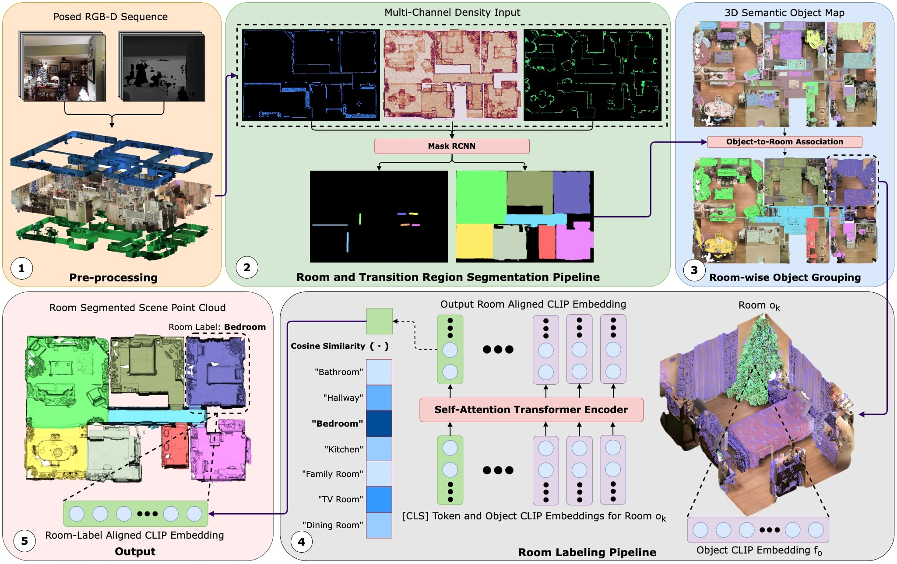
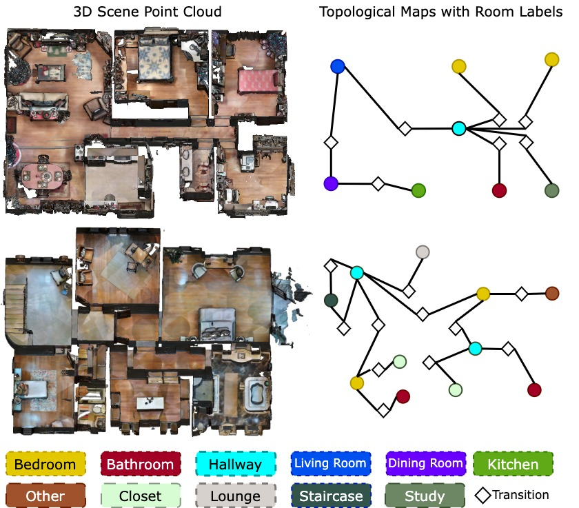

Abstract
Understanding the structural organisation of 3D
indoor scenes in terms of rooms is often accomplished via floor-
plan extraction. Robotic tasks such as planning and navigation
require a semantic understanding of the scene as well. This is
typically achieved via object-level semantic segmentation. How-
ever, such methods struggle to segment out topological regions
like “kitchen” in the scene. In this work, we introduce a two-
step pipeline. First, we extract a topological map, i.e., floorplan
of the indoor scene using a novel multi-channel occupancy
representation. Then, we generate CLIP-aligned features and
semantic labels for every room instance based on the objects
it contains using a self-attention transformer. Our language-
topology alignment supports natural language querying, e.g.,
a “place to cook” locates the “kitchen”. We outperform the
current state-of-the-art on room segmentation by ∼20% and
room classification by ∼12%. Our detailed qualitative analysis
and ablation studies provide insights into the problem of joint
structural and semantic 3D scene understanding.
Overview

Natural Languge Querying
Re-rendering the input video
QueSTMaps develops an understanding of a higher hierarchy of rooms, and understands queries on natural language.

Downstream Tasks
Making a topological map
Using QueSTMaps, you can get a topological map of the entire scene, useful for downstream tasks like navigation and planning.

BibTeX
@misc{mehan2024questmaps,
title={QueSTMaps: Queryable Semantic Topological Maps for 3D Scene Understanding},
author={Yash Mehan and Kumaraditya Gupta and Rohit Jayanti and Anirudh Govil and Sourav Garg and Madhava Krishna},
year={2024},
eprint={2404.06442},
archivePrefix={arXiv},
primaryClass={cs.CV}
}